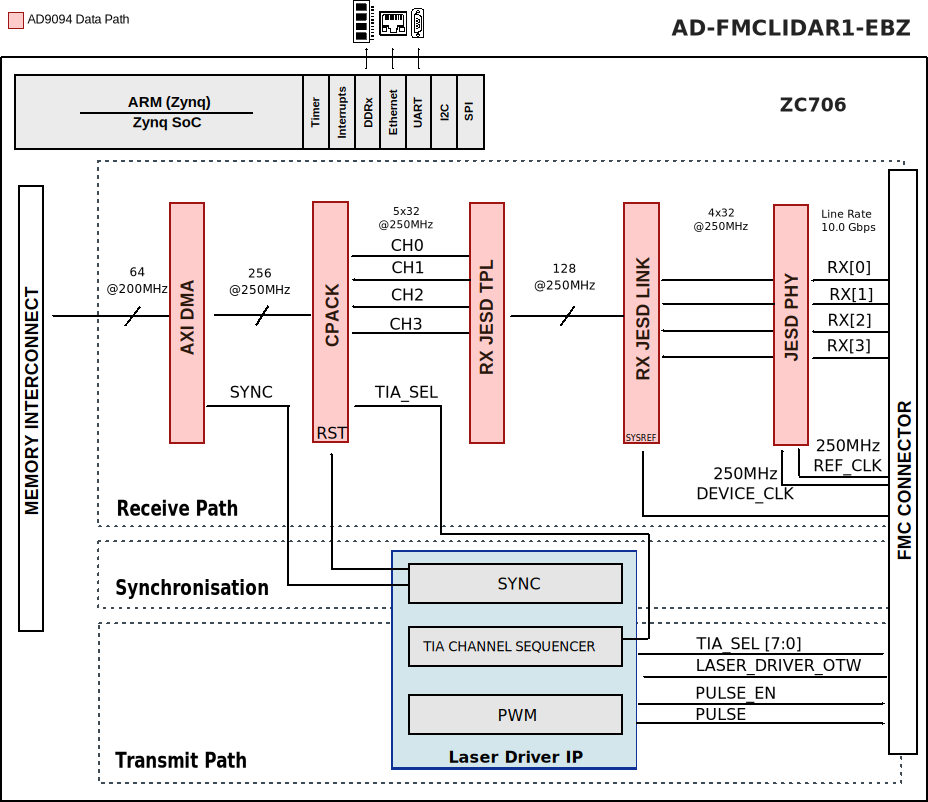

AD-FMCLIDAR1-EBZ HDL project (OBSOLETE)
Warning
The support for AD-FMCLIDAR1-EBZ
HDL project has been discontinued, the latest release branch where it can be found
is hdl_2019_r1. This page is left for legacy purposes only.
Overview
The AD-FMCLIDAR1-EBZ is a prototyping platform for LiDAR applications that can be used on FPGA development boards enabled with FMC HPC connector and JESD204B support capability. It offers developers a working-out-of-box platform that can be used for developing software and algorithms for a broad range of applications.
The full system hardware includes Data Acquisition(DAQ) Board, Laser Transmitter Board, and the AFE Receiver Board.
Supported boards
Supported carriers
Important
The Arria10SOC carrier requires a hardware rework to function correctly. The rework connects FMC_A header pins directly to the FPGA so that they can be accessed by the fabric.
Changes required:
REMOVE: R575, R576, R621, R633, R612, R613
POPULATE: R574, R577, R620, R632, R610, R611
Block design
Block diagram
The main scope of the HDL design is to provide all the required digital interfaces for the data acquisition board of the prototyping system.
The following block diagram presents the simplified system architecture:
{kind=link}
AXI Laser Driver IP
The axi_laser_driver IP is responsible to generate a narrow pulse for the laser driver circuit, to control the TIA channel selection on the analog front end (AFE) board, and to synchronize the data acquisition to the generated pulses.
More information about the IP can be found at AXI Laser Driver.
Control interfaces
Name |
Type |
Details |
|---|---|---|
adc_fd* |
GPIO |
Monitors the AD9094 Fast detect output lines |
adc_pwdn |
GPIO |
Controls the AD9094 Power-Down input line |
spi_adc_* |
4-wire SPI |
AD9094 configuration interface |
spi_vco_* |
3-wire SPI |
ADF436-7 configuration interface |
spi_clkgen_* |
4-wire SPI |
AD9528 configuration interface |
laser_driver_pn |
LVDS output |
It controls the laser driver circuit, it is generated by the axi_laser_driver IP instance |
laser_gpio[13:0] |
GPIO |
Unused GPIO line on the lase board |
tia_chsel[7:0] |
CMOS output |
TIA channel selection lines, it is controlled by the axi_laser_driver instance |
afe_dac_sdasclloadclr_n |
I2C/GPIO |
AD5627 configuration interface |
rx_ref_clk_pn |
LVDS |
JESD204B reference clock for the high-speed gigabit transceivers; runs at 250MHz |
rx_device_clk_pn |
LVDS |
JESD204B device clock for the transport layer and additional data processing; runs at 250MHz |
rx_data_pn[3:0] |
CML |
JESD204B high-speed serial lanes; runs at 10Gbps |
rx_sync_pn[1:0] |
LVDS |
JESD204B SYNC signals for interface synchronization |
rx_sysref_pn |
LVDS |
JESD204B SYSREF signal for deterministic latency |
JESD204B interface
The JESD204B interface runs in Subclass 1 mode to ensure the deterministic latency of the link. The following tables are summarizing the JESD204B important configuration parameter and attributes.
Parameter name |
Abbreviation |
Value |
|---|---|---|
Number of lanes |
L |
4 |
Number of converter |
M |
4 |
Converter resolution |
NP |
8 |
Total number of Bits per Sample |
NP |
8 |
Samples per frame |
S |
1 |
Octets per frame |
F |
1 |
Frames per Multiframe |
K |
32 |
Number of control bits |
CS |
0 |
Rates and Clocks |
Value |
|---|---|
Sample rate |
1 GSPS |
Lane rate |
10 Gbps |
GT reference clock |
250 MHz |
Device clock |
250 MHz |
CPU/Memory interconnects addresses
The addresses are dependent on the architecture of the FPGA, having an offset added to the base address from HDL (see more at CPU/Memory interconnects addresses).
Instance |
ZCU102 |
ZC706 |
|---|---|---|
afe_dac_iic |
0x7c800000 |
— |
axi_ad9694_xcvr |
0x44A50000 |
0x44A50000 |
ad9694_tpl_core |
0x44A10000 |
0x44A10000 |
ad9694_jesd |
0x44AA0000 |
0x44AA0000 |
ad9694_dma |
0x7c400000 |
0x7c400000 |
axi_spi_vco |
0x7c500000 |
0x7c500000 |
axi_spi_afe_adc |
0x7c600000 |
0x7c600000 |
axi_laser_driver_0 |
0x7c700000 |
0x7c700000 |
Instance |
A10SoC |
|---|---|
sys_spi_clockgen |
0x00000060 |
sys_spi_vco |
0x00000080 |
sys_spi_afe_adc |
0x000000A0 |
ad9694_jesd204.link_reconfig |
0x00040000 |
ad9694_jesd204.link_management |
0x00044000 |
ad9694_jesd204.link_pll_reconfig |
0x00045000 |
ad9694_jesd204.phy_reconfig_0 |
0x00048000 |
ad9694_jesd204.phy_reconfig_1 |
0x00049000 |
ad9694_jesd204.phy_reconfig_2 |
0x0004a000 |
ad9694_jesd204.phy_reconfig_3 |
0x0004b000 |
axi_ad9694_dma |
0x0004c000 |
axi_ad9694 |
0x00050000 |
axi_laser_driver_0 |
0x00060000 |
avl_laser_gpio |
0x00070000 |
SPI connections
SPI type |
SPI manager instance |
SPI subordinate |
CS |
||
|---|---|---|---|---|---|
ZC706/ZCU102 |
A10SoC |
ZC706/ZCU102 |
A10SoC |
||
PS |
PL |
SPI 0 |
— |
AD9094 |
0 |
PS |
PL |
SPI 1 |
SYS_SPI/AXI_SPI |
AD9528 |
0 |
PL |
PL |
AXI_QUAD_SPI |
SYS_SPI/AXI_SPI |
ADF4360-7 |
0 |
PL |
— |
AXI_QUAD_SPI |
SYS_SPI/AXI_SPI |
AD5627 |
0 |
GPIOs
GPIO signal |
Direction (from FPGA view) |
HDL GPIO EMIO |
Software GPIO Zynq MP |
Software GPIO Zynq |
Software GPIO Arria 10 |
|
|---|---|---|---|---|---|---|
Xilinx |
Intel |
|||||
laser_gpio[13:0] |
INOUT |
51-38 |
— |
129-116 |
105-92 |
— |
afe_adc_convst |
OUTPUT |
37 |
37 |
115 |
91 |
5 |
afe_dac_load |
OUTPUT |
36 |
36 |
114 |
90 |
4 |
afe_dac_clr_n |
OUTPUT |
35 |
35 |
113 |
89 |
3 |
adc_pdwn |
INOUT |
34 |
34 |
112 |
88 |
2 |
adc_fdb |
INOUT |
33 |
33 |
111 |
87 |
1 |
adc_fda |
INOUT |
32 |
32 |
110 |
86 |
0 |
Interrupts
Below are the Programmable Logic interrupts used in this project.
Instance name |
HDL |
Microblaze |
Linux ZynqMP |
Actual ZynqMP |
|---|---|---|---|---|
ad9694_jesd |
11 |
14 |
109 |
141 |
afe_dac_iic |
12 |
14 |
109 |
141 |
ad9694_dma |
13 |
12 |
107 |
139 |
axi_spi_vco |
10 |
15 |
110 |
142 |
axi_spi_afe_adc |
9 |
8 |
103 |
135 |
axi_laser_driver_0 |
8 |
7 |
102 |
134 |
Instance name |
HDL |
A10SoC |
|---|---|---|
sys_spi_clockgen |
8 |
27 |
sys_spi_vco |
9 |
28 |
sys_spi_afe_adc |
10 |
29 |
ad9694_jesd204 |
11 |
30 |
axi_ad9694_dma |
12 |
31 |
axi_laser_driver_0 |
13 |
32 |
avl_laser_gpio.irq |
14 |
33 |
Known issues
If the Lidar board do not power up.
Problem: The Lidar boards do not power up because the PG_C2M pull-up resistor value on the carrier (Arria 10) is too high.
Solution: On Arria 10 - place a 4k7 ohms resistor in parallel with R5517.
Note:
The PG_C2M can no longer be software controlled. As soon as there is an auxiliary 3V3 on the carrier, the Lidar platform receives the power up command. This problem only affects Lidar Rev B.
Building the HDL project
The design is built upon ADI’s generic HDL reference design framework. ADI distributed the bit/elf files of this project as part of the ADI Kuiper Linux until the 2019_R1 release. The prebuilt files can be found in the previous link. Afterwards, it was discontinued.
But, if you want to build the sources, ADI makes them available on the
HDL repository. To get the source you must
clone
the HDL repository and checkout the last release branch where this project
still exists, hdl_2019_r1.
Then go to the hdl/projects/ad_fmclidar1_ebz/$zc706 location and run the make command. You can also go to the other folder for different carriers.
/hdl$
git checkout hdl_2019_r1
/hdl$
cd projects/ad_fmclidar1_ebz/zc706
/hdl/projects/ad_fmclidar1_ebz/zc706$
make
A more comprehensive build guide can be found in the Build an HDL project user guide.
Resources
Parts
Laser Board
3.3 V, 200 Mbps, Half-Duplex, High Speed M-LVDS Transceiver with Type 1 Receiver
High Speed, Dual, 4 A MOSFET Driver, non-inverting A/B input pins, 9.5V
DAQ Board
1.2 A, Ultralow Noise, High PSRR, Fixed Output, RF Linear Regulator
2 A, Ultralow Noise, High PSRR, Adjustable Output, RF Linear Regulator
AFE Board
More information
Support
Analog Devices, Inc. will provide limited online support for anyone using the reference design with ADI components via the EngineerZone FPGA reference designs forum.
For questions regarding the ADI Linux device drivers, device trees, etc. from our Linux GitHub repository, the team will offer support on the EngineerZone Linux software drivers forum.
For questions concerning the ADI No-OS drivers, from our No-OS GitHub repository, the team will offer support on the EngineerZone microcontroller No-OS drivers forum.
It should be noted, that the older the tools’ versions and release branches are, the lower the chances to receive support from ADI engineers.